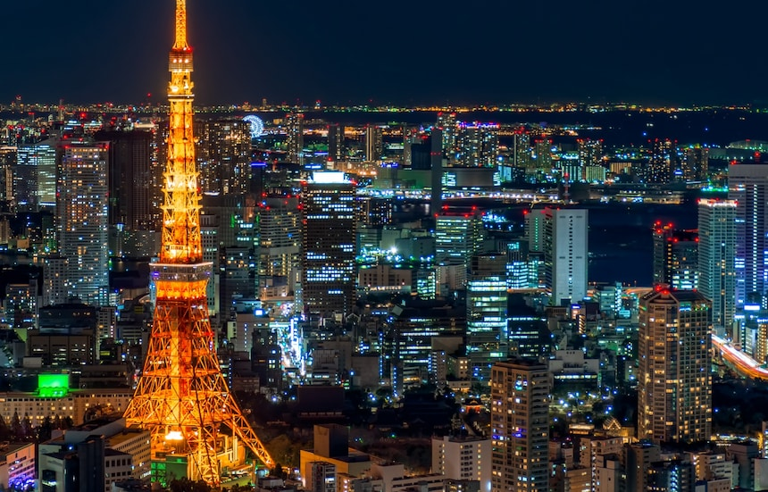

Mizukake (水かけ) พิธีกรรมชำระล้างผ่านการสาดน้ำ

รากศัพท์และการประกอบคำ:มาจากคำนาม Mizu (水) ที่แปลว่าน้ำ ประกอบกับคำกริยา Kakeru (掛ける) ที่แปลว่า ราด, เท, หรือสาด เมื่อนำมารวมกันในบริบทของเทศกาล (Matsuri) จะไม่ใช่การสาดน้ำเพื่อความบันเทิงทั่วไป (ซึ่งมักใช้คำว่า Mizuasobi หรือการเล่นน้ำ) แต่เป็นกริยาศักดิ์สิทธิ์ที่มีนัยถึงการส่งมอบพลังบริสุทธิ์
ความเป็นมาและรากเหง้าทางความเชื่อ:รากเหง้าของ Mizukake มาจากพิธีกรรมทางศาสนาชินโตที่เรียกว่า "มิโซงิ" (Misogi - 禊) ซึ่งเป็นพิธีที่ผู้ปฏิบัติธรรมหรือนักบวชต้องลงไปแช่ในน้ำตกหรือแม่น้ำที่หนาวจัดเพื่อล้างมลทินทางกายและใจ (คิเอนิ-เคงาเระ) ต่อมาในยุคเอโดะ (ค.ศ. 1603–1867) เมืองหลวงเติบโตอย่างรวดเร็ว เกิดโรคระบาดและอัคคีภัยบ่อยครั้ง ชาวเมืองจึงได้ประยุกต์พิธีมิโซงิที่จำกัดเฉพาะนักบวช ให้กลายเป็น "เทศกาลชาวบ้าน" โดยการนำน้ำบริสุทธิ์มาสาดใส่ขบวนแห่และผู้คน เพื่อขจัดปัดเป่าสิ่งชั่วร้าย (Yakuyoke) และป้องกันโรคระบาดในฤดูร้อน
กลไกการใช้งานและหน้าที่ในงานเฟสติวัล: น้ำคือสิ่งศักดิ์สิทธิ์: น้ำที่นำมาใช้ในอดีตต้องเป็นน้ำจากบ่อน้ำของศาลเจ้า หรือน้ำสะอาดที่ผ่านการทำพิธีสวด (Gokito) แล้ว ผู้สาดและผู้รับ: ชาวบ้านสองข้างทางจะทำหน้าที่เป็นผู้ "ส่งมอบ" พร โดยการสาดน้ำใส่คนแบกเสลี่ยงเทพเจ้า ซึ่งในความเชื่อชินโต คนแบกเหล่านี้กำลังแบกรับพลังงานของเทพเจ้าและแบกรับความทุกข์ของชุมชน การสาดน้ำใส่พวกเขาจึงเป็นการช่วย "ล้างเหนื่อย" และ "ล้างมลทิน" ให้บริสุทธิ์อยู่เสมอ